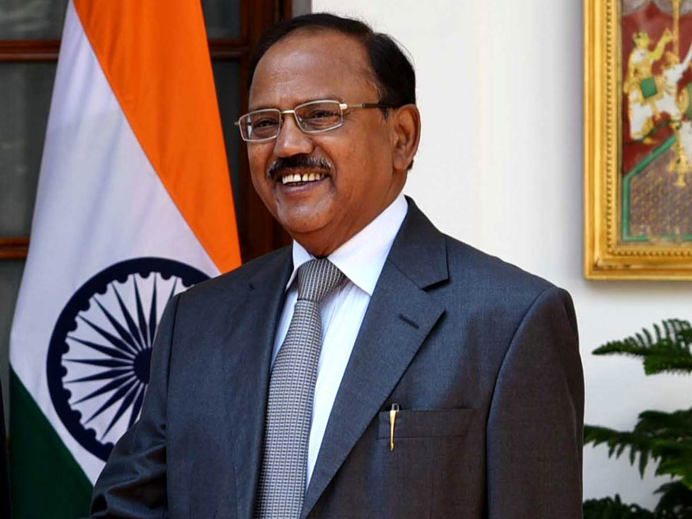
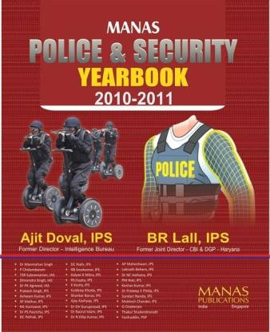
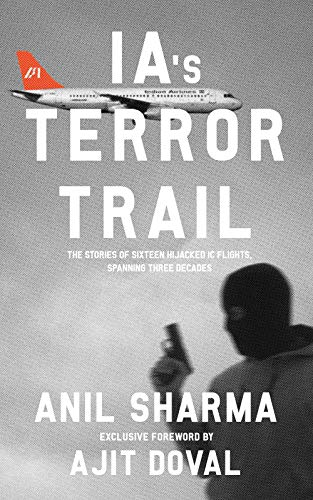

AJIT DOVAL
5TH NATIONAL SECURITY ADVISOR OF INDIA

Ajit Kumar Doval is a central civil servant of the IPS cadre and the fifth and current NSA National Security Advisor to the Prime Minister of India, with the precedence equivalent to Cabinet Minister.
Early Life and Education
- Doval was born in 1945 in Ghiri Banelsyun village in Pauri Garhwal in the erstwhile United Provinces, now in Uttarakhand. Doval's father, Major G. N. Doval, was an officer in the Indian Army.
- He received his early education at the Ajmer Military School in Ajmer, Rajasthan.He graduated with a master's degree in Economics from the Agra University in 1967. He has been awarded an honorary doctorate from Dr. Bhimrao Ambedkar University (formerly Agra University) in December 2017; Kumaun University in May 2018; and Amity University, in November 2018.
- Doval joined the Indian Police Service in 1968 in the Kerala cadre as the ASP of Kottayam district.He was posted in northeast India and Pakistan for seven years each.He was actively involved in Anti-Insurgency Operations in Punjab.
- Doval worked in Thalassery, Kerala, for a few months in 1972, before joining the central service.He was one of three negotiators in the release of passengers from IC-814 in Kandahar in 1999.He has the experience of being involved in the termination of all 15 hijackings of Indian Airlines Aircraft from 1971 to 1999.In the headquarters, he headed IB's operations wing for over a decade and was founder Chairman of the Multi Agency Centre (MAC), as well as of the Joint Task Force on Intelligence (JTFI).
- Ajit Doval played a role in intelligence for Sikkim's merger with India.He was trained under M.K.Narayanan, the third National Security Advisor of India for a brief period in counterterrorism operations.He was also part of the team sent to Kandahar to negotiate the release of the passengers of Indian Airlines IC-814.He was later appointed as Director of the Intelligence Bureau.
- Doval retired in January 2005 as Director, Intelligence Bureau.In December 2009, he became the founding Director of the Vivekananda International Foundation, a public policy think tank set up by the Vivekananda Kendra.Doval has remained actively involved in the discourse on national security in India.Besides writing editorial pieces for several leading newspapers and journals, he has delivered lectures on India's security challenges and foreign policy objectives at several renowned government and non-governmental institutions, security think-tanks in India and abroad.
- In 2009 and 2011 He co-wrote two reports on "Indian Black Money Abroad in Secret Banks and Tax Havens", with others, leading in the field as a part of the task force constituted by BJP.
- In recent years, he has delivered guest lectures on strategic issues at IISS, London, Capitol Hill, Washington DC, Australia-India Institute, University of Melbourne, National Defence College, New Delhi and the Lal Bahadur Shastri National Academy of Administration, Mussoorie. Doval has also spoken internationally at global events, citing the ever-increasing need of co-operation between the major established and emerging powers of the world.
- On30 May 2014, Doval was appointed as India's fifth National Security Advisor. In June 2014, Doval facilitated the return of 46 Indian Nurses who were trapped in a hospital in Tikrit, Iraq, following the Capture of Mosul by ISIL. Doval, flew to Iraq on 25 June 2014 to understand the position on the ground and make high-level contacts in the Iraqi Government.
- He is widely credited for the doctrinal shift in Indian national security policy in relation to Pakistan. It was speculated that the September 2016 Indian strikes in Pakistan-controlled Kashmir were his brainchild.
- In October 2018, he was appointed as the Chairman of the Strategic Policy Group (SPG), which is the first tier of a three tier structure at the National Security Council and forms the nucleus of its decision-making apparatus.
- Following the 2019 Balakot Airstrike and retaliatory 2019 Jammu and Kashmir airstrikes and subsequent capture of Indian pilot Abhinandan Varthaman by Pakistani military, Ajit Doval had held talks with US Secretary of State and National Security Advisor to secure the release of the Indian pilot.
- On 3 June 2019, he was reappointed as NSA for 5 years and granted the personal rank of a Cabinet Minister. Doval is the first NSA to hold such a rank. He was also an instrumental figure in Revocation of the Special Status of Jammu and Kashmir.
- 1951:- President's Police Medal
- 1968:- Indian Police Services(Kerala)
- 1986:- Mizoram Peace Accord
- 1988:- Operation Black Thunder-II
- 1988:- Kirti Chakra
- 1999:- IC 814 Hijack to Kandahar
- 2004-05:- Director of the Intelligence Bureau(IB)
- 2009:- Vivekananda International Foundation
- Since May 2014:- National Security Advisor to PRIME MINISTER
Police and Intelligence Career
Post-Retirement (2005–2014)
National Security Advisor (2014–Present)
Achievements and Recognitions
Some Inspiring Books Of AJIT DOVAL

Manas Police & Security Year Book: 2010-2011
Manas Police & Security Year Book: 2010-2011
Publishing year: 2010

IA's Terror Trail
IA's Terror Trail
Publishing year: 2014